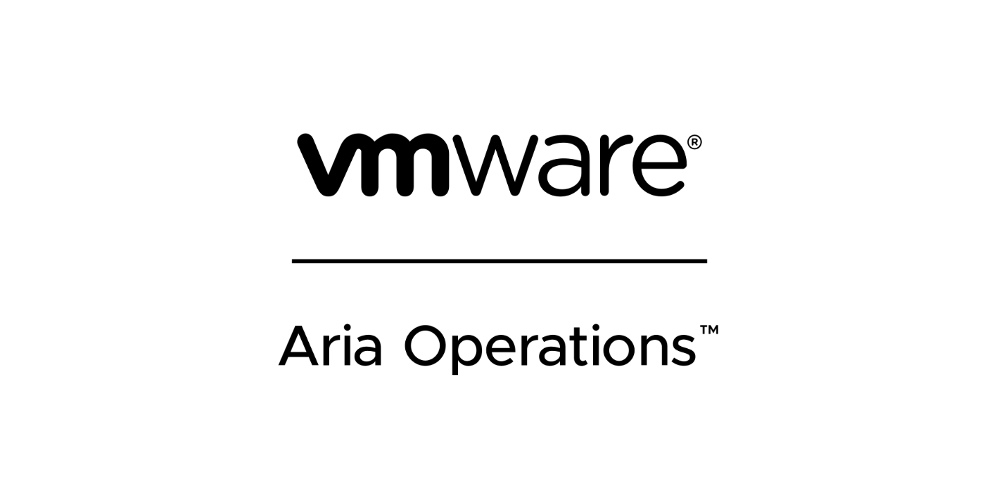
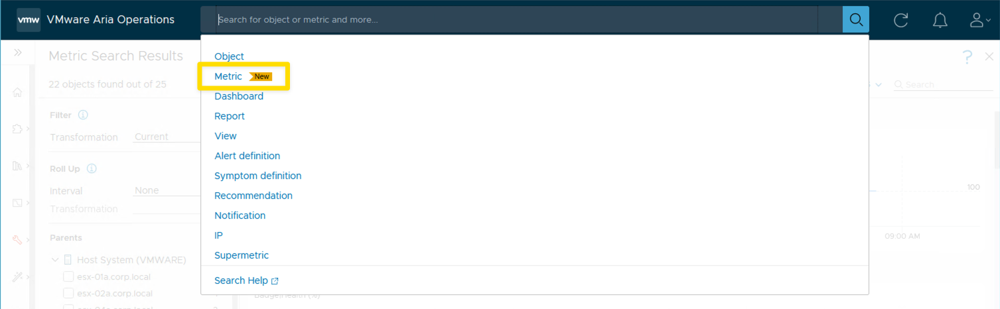
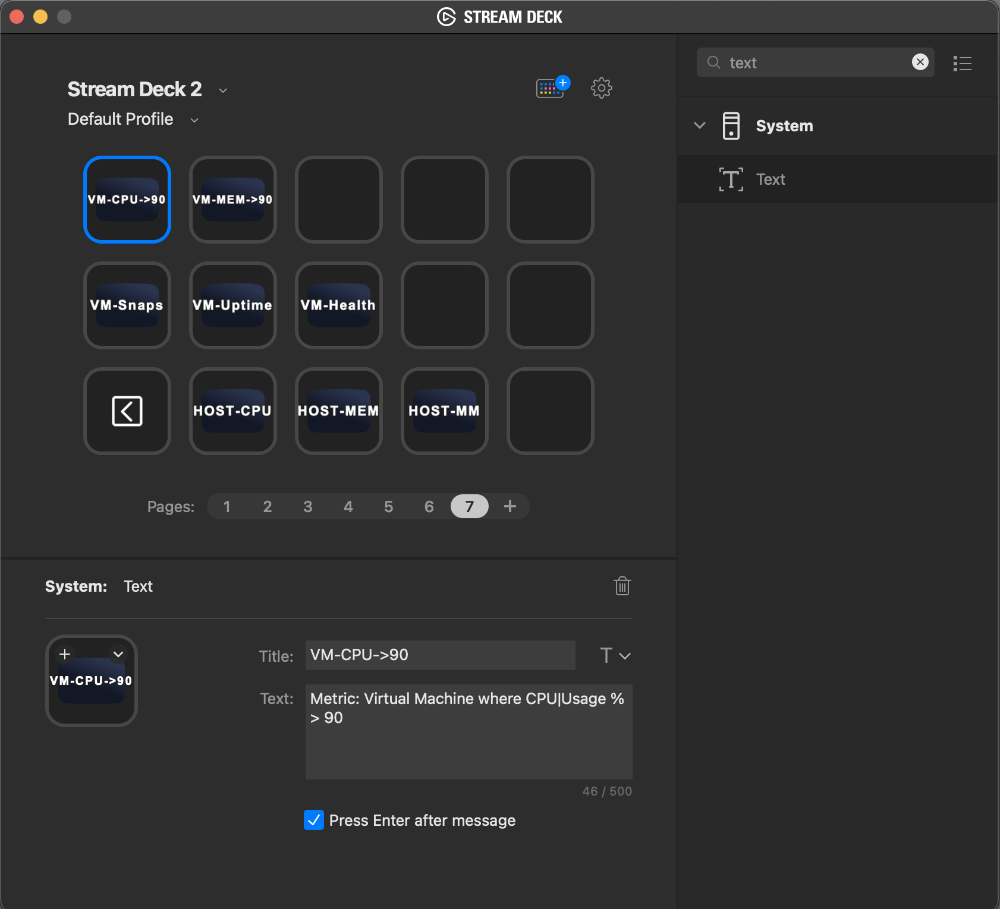

Unlocking the Potential | VMware Aria Operations | Metric Search

Example metric queries to help you with "Real World" questions.
This blog post is the start of a series of blog posts that will be created to help you "Unlock the Potential" of the VMware Aria Products. I want to give you some "Real World" examples that VMware admins could use everyday to help them with their daily tasks. Hopefully you will learn from my Tips and Tricks.
VMware Aria Operations 8.12 Released:
With the release of VMware Aria Operations 8.12, Metric Searches was added to the product.

I always like to create Dashboards with VMware Aria Operations to show metric information that I think is important to a VMware Admin. I think that metric searches will help provide a lot of information that is not included on existing or custom dashboards. Metric Searches will also allow non-admins, that don't have permission to create dashboards and views, to see specific information to help troubleshoot an issue.
I really like how the results of a metric search will stack and then you can scroll to see what item has the highest value. You can change the results to show different time ranges. After results are displayed you can also start defining the parents of the results.
Search Examples:
In this example the metric search found all VMs with CPU|Ready ms > 750 ms. When search is complete you can define the search further by selecting the parent host.
# --- Find All VMs with CPU|Ready ms > 750 ms
Metric: Virtual Machine where CPU|Ready ms > 750 ms
Now lets take the search used above and define the results further by specifying host or cluster.
# --- Find All VMs with CPU|Ready ms > 750 ms WHERE the host is esx-02a.corp.local
Metric: Virtual Machine where CPU|Ready ms > 750 ms childOf esx-02a.corp.local
# --- Find All VMs with CPU|Ready ms > 750 ms WHERE the cluster is Cluster-01
Metric: Virtual Machine where CPU|Ready ms > 750 ms childOf Cluster-01Example Metric Searches for VMs:
# --- Find All VMs with CPU usage % greater than 90
Metric: Virtual Machine where CPU|Usage % > 90
# --- Find All VMs with Memory usage % greater than 90
Metric: Virtual Machine where Memory|Usage % > 90
# --- Find All VMs with Snap Shots older than 2 days
Metric: Virtual Machine where {Disk Space|Snapshot|Age (Days)} > 2
# --- Find All VMs running longer than 30 days. Shows VMs not patched if you do monthly patching.
Metric: Virtual Machine where {System|OS Uptime Second(s)} > 30 {Day(s)}
# --- Show CPU and Memory usage for all VMs with a specific string in the name
Metric: Virtual Machine where CPU|Usage % > 0 and Memory|Usage % > 0 and Configuration|Name contains 'rocky'
# --- Show CPU and Memory usage for a specific VM
Metric: Virtual Machine where CPU|Usage % > 0 and Memory|Usage % > 0 and Configuration|Name equals 'DBH-196'
# --- Show CPU and Memory usage for all VMs in a specific Cluster
Metric: Virtual Machine where CPU|Usage % > 0 and Memory|Usage % > 0 and Summary|Parent Cluster equals 'Cluster-02'Example Metric Searches for Hosts:
# --- Show Hosts with High CPU Usage
Metric: Host System where CPU|Usage % > 80
# --- Show Hosts with High Memory Usage
Metric: Host System where Memory|Usage % > 80
# --- Show Hosts In Maintenance Mode
Metric: Host System where Runtime|Maintenance State equals 'inMaintenance'
# --- Show Hosts where Health is less than 100%
Metric: Host System where Badge|Health % < 100
# --- Show Hosts where Workload is greater than 75%
Metric: Host System where Badge|Workload % > 75
# --- Show CPU Usage and Memory Usage for all Hosts In a Specific Cluster
Metric: Host System where CPU|Usage % > 0 and Memory|Usage % > 0 and Summary|Parent Cluster equals 'Cluster-01'Example Metric Searches for Clusters:
# --- Show Clusters where DRS was turned off
Metric: Cluster Configuration|DRS Configuration|Enabled of Cluster Compute Resource where Cluster Configuration|DRS Configuration|Enabled equals 'false'Example Metric Searches for Datastores:
# --- Show Datastores where Capacity used is greater than 75%
Metric: Datastore where Capacity|Used Space % > 75
# --- Show Datastores where Health is less than 100%
Metric: Datastore where Badge|Health % < 100These metric search query examples should give you some good ideas of what you can do. Take these examples and change to make your own. Have Fun!
Metric search queries remind me of one of my favorite quotes:
Your thought process is the most powerful automation tool you’ll ever have! - Cody De Arkland
Stream Deck
If you're thinking to yourself, I don't want to have to type or copy/paste these metric searches everyday, I have a solution. STREAM DECK! If you ever wanted an excuse to spend the money for a Stream Deck, now is the time! You can program the buttons of a Stream Deck to do the searches. There is a button type in the Stream Deck called text. Enter the metric search query as the text. See the screen shot below. AWESOME!

Demo of doing Multiple Searches in a row and all the text is entered by the Stream Deck.

How to use the Kebab menu to go to the TroubleShooting Workbench
Here is an example of all the steps above and then also choosing the kebab menu to go to the troubleshooting workbench.
- [x] Enter Search String with Stream Deck
- [x] Review the VMs for high CPU
- [x] Change the date range to 7 days to see how long the VM has been at 100% usage
- [x] Go to the troubleshooting WorkBench to see why the CPU usage is so high.

Lessons Learned
- Metric Searches are a great way to do get some quick data.
- Nice way for non-admins to get data they want to see that isn't included in OOTB (Out of The Box) Dashboards and Views.
- Quick way to be able to stack metrics from multiple objects.
- Metric Search adds a way to extend how you would use Aria Operations Standard version, because you can not create custom dashboards and views.
Links I found to be very helpful:
When I write my blogs, I always say there are many ways to accomplish the same task. This article is just one way that you could accomplish this task. I am showing what I felt was a good way to complete the use case but every organization/environment will be different. There is no right or wrong way to complete the tasks in this article.
- If you found this Blog article useful and it helped you, Buy me a coffee to start my day.